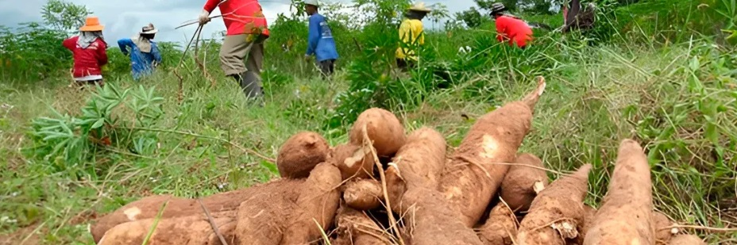
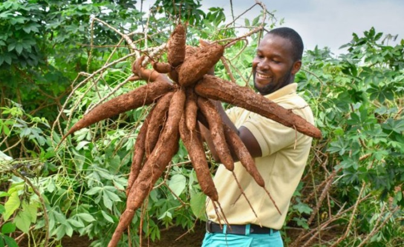

Sobre nuestra yuca
La yuca es parte esencial de la alimentación tradicional, cultivada sin químicos y con técnicas ancestrales.


La yuca es parte esencial de la alimentación tradicional, cultivada sin químicos y con técnicas ancestrales.

